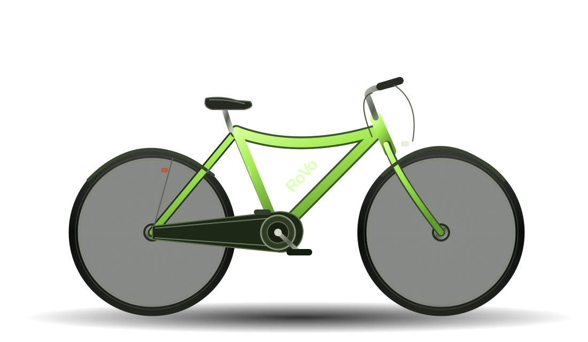

Less time
getting there.
More time
being there.
Your campus. Your pace. A bike when you need it.
Meet RoVo, built around the way students move.

Campus is full
of possibilities.
Go be in them.
That class across campus. A coffee with friends. The thing you almost skipped because it felt too far away.
RoVo is a student-founded bike rental concept designed to turn those everyday distances into easy rides—without needing to own a bike.
A little less friction. A lot more freedom. ↘Go on your terms.
A ride that fits between everything else.
Own the moment.
Enjoy the ride without owning the bike.
Make room for more.
More campus. More connection. More you.
Three moves.
You're there.
The proposed RoVo experience.
Designed to be as simple as your next ride.
Choose a bike near you.
Illustrative interface and schematic map. Not live bike availability.
Big campus.
Small distances.
Good energy.
From the first class to the last hangout.
RoVo is about getting more out of being here.
We walk these
routes, too.
Four founders. One shared idea: campus life should be easier to get to.
Meet Ankit, Dillon, Karan, and Ved—the students building RoVo.
Meet our founders ↗Life happens
when you get there.
RoVo is in development.
Follow the idea. Meet the people behind it.
Your questions.
A little clarity.
Can I rent a RoVo bike right now?+
RoVo is currently in development. This website introduces the concept; rentals and live availability are not yet offered here.
Where would RoVo operate?+
Our initial focus is campus travel at East Carolina University. Launch locations and designated parking areas would be announced after arrangements and approvals are in place.
How much would a ride cost?+
Pricing is still being developed. Final rates and rental terms will be shared before service launches.
Is RoVo affiliated with ECU?+
RoVo is an independent student-founded venture. This website does not imply university endorsement or an approved campus service.